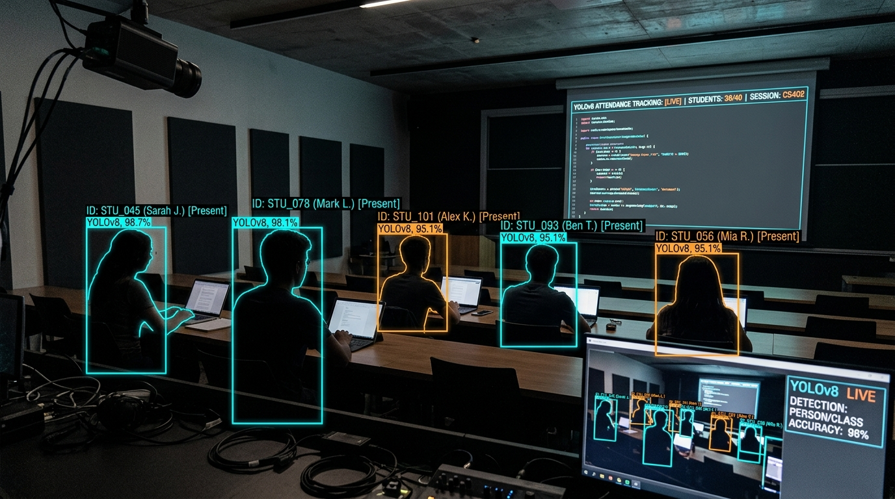
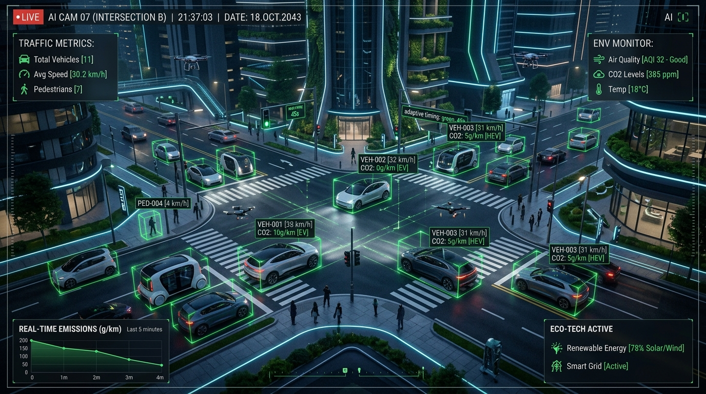
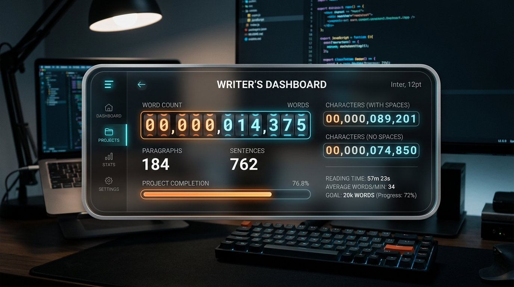
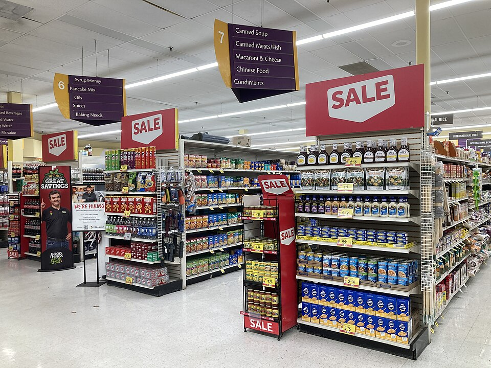
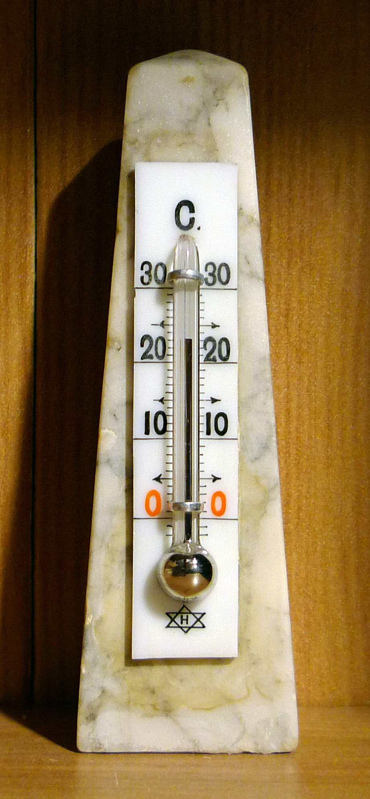

Projects
A showcase of my recent work, development projects, and open-source contributions.
AI Meme & Poster Generator
An AI-powered Streamlit web app that automates meme and poster generation, dynamically overlaying clever captions onto templates.

Automated Attendance Tracker
An automated attendance tracking system using YOLOv8 & OpenCV to detect and count people from meeting images via a live dashboard.
Browser-Based AES Encryption Tool
A secure, client-side web tool for AES encryption and decryption, supporting multiple key sizes and random IV generation.
ConstructGuard AI
A full-stack AI application designed for construction defect detection, featuring automated inspection reporting using Gemini 2.5 Flash.
NailSense AI
A deep learning system using a CNN (VGG16) to diagnose early-stage diseases via human nail image analysis with 98% accuracy.

EcoVision AI
An AI-powered computer vision system that monitors traffic flows and estimates real-time CO2 emissions through a live dashboard.
PoultryVision AI
An AI-driven disease detection system for poultry using hierarchical CNNs, offering Grad-CAM explainability and veterinary guidance.

Typeset Word & Letter Counter
A sleek, interactive word and character counter styled like an instrument panel with live odometer animations and theming.
Audio Forensics AI
An exploratory AI project focused on voice security, audio forensics, and analyzing audio signals for deepfake detection.
Netflix Data Analysis
A comprehensive data analysis project uncovering trends, insights, and content strategies from Netflix's extensive datasets.

Retail Sales Analysis
An analytical study detailing sales patterns, consumer trends, and actionable insights extracted from retail datasets.
Road Lane Detection
A computer vision model built to automatically detect and highlight road lanes from vehicle dashboard camera feeds.

Temperature Prediction Model
A predictive machine learning model estimating environmental temperatures based on humidity and atmospheric data.
Time Series Quantity Analysis
A time series analysis project focusing on forecasting quantities and identifying temporal trends in complex datasets.
Credit Card Fraud Detection
A machine learning pipeline developed to accurately detect and recognize fraudulent activities within credit card transaction data.